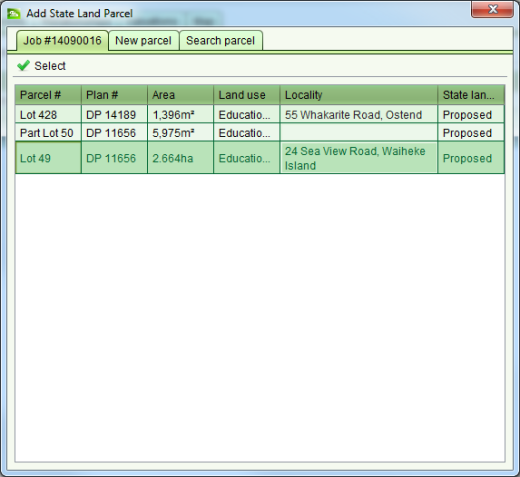

Record New Property
The Record New Property task allows you to create new state land property records in SOLA
State Land. When creating a new state land property you should also create new state land
parcels using the Create or Change Parcels task.
Steps
-
-
Lodge a new job. Make sure it includes the Record New Property task. You should also
add a Create or Change Parcels task to create any parcels for the new state land
property.
-
If you have added a Create or Change Parcels task to the job, process that task first.
-
From the Tasks tab of the Job Details screen, select the Record New Property task and
click the
 Start tool. This will open
the Property Details screen.
Start tool. This will open
the Property Details screen.
-
On the General tab, enter a description for the property and link any relevant
documents. You can leave the Area empty has this is populated when you add parcels.
-
On the Parcels tab, click
 Add and use the
Add State Land Parcel dialog to select or create the parcels for the property.
Add and use the
Add State Land Parcel dialog to select or create the parcels for the property.
-
If you have created new parcels using the Create or Change Parcels task, these will
be displayed on the Job tab. Highlight the parcel you want to add to the property
and click
 Select.
Select.
-
If the parcel has no spatial definition, and it is not already recorded in SOLA
State Land, you can use the New Parcel tab to enter details describing the new
parcel. When all details are entered, click
 Close.
Close.
-
If the parcel you want to link to the property is already recorded in SOLA State
Land, use the Search Parcel tab and enter the parcel appellation (i.e. lot and plan
number). A list of matching parcels will be displayed for you to choose. Use Select to add the chosen parcel to
the property.

Add State Land Parcel dialog
-
-
If the property is defined by more than one area, continue to add the relevant state
land parcels as appropriate. You can also
 Remove parcels from the
property if they are added in error.
Remove parcels from the
property if they are added in error.
-
On the General tab, check the Area field. It should be the sum of the parcel areas. If
the area for the property is incorrect, update it to the correct value.
-
On the Interests tab, you will see a State Landholder interest has been automatically
added to the new State Land Property.
-
If this property is to be purchased / owned by the state, then you must
 Edit this interest and add the name of the
state organization, ministry or entity that the property will be vested with as the
State Landholder Rightholder.
Edit this interest and add the name of the
state organization, ministry or entity that the property will be vested with as the
State Landholder Rightholder.
-
If the property is being leased or licensed by the state from another party, (i.e.
the state is the lessee) then you need to Remove the State
Landholder interest and
 Create an
Owner interest. For the Owner interest, enter the details of the land owner(s) the
property is being leased/licensed from. You also need to Create a Lease (or License) interest and
record the state organization, ministry or entity that will lease/license the
property as the Rightholder.
Create an
Owner interest. For the Owner interest, enter the details of the land owner(s) the
property is being leased/licensed from. You also need to Create a Lease (or License) interest and
record the state organization, ministry or entity that will lease/license the
property as the Rightholder.
-
If there are other interests on the property (e.g. easements, restrictions, leases,
conditions, etc.) select the appropriate interest type from the Type dropdown and click
Create. This will open the relevant
Interest Details screen and you can enter information to describe the interest.
-
If you need to make further changes to any interests you can Edit and Remove them as required.
-
On the Relationships tab, you can Add links to underlying titles (i.e. recorded
property) and define relationships to other property using the Add Property
Relationship screen.
-
SOLA State Land does try to identify underlying titles for you based on the parcels
added to the new property so you may see these already listed on the Relationships
tab.
-
The Relationship type dropdown has several options that you can use to define
relationships between the new property and existing property. This list can be
customized to match the requirements of the state land agency.
-
On the Notes tab Add any notes relevant
for the new property. If there are outstanding actions required, such as verifying the
property information using external sources, you can add an actionable note that will
ensure the property appears in the Properties to action list on the dashboard.
-
The Valuations tab is read only so you will not be able to make any changes to it (see
the Manage Valuations task).
-
If you have linked mapped parcels to the property, the Map tab will zoom to the
location of those parcels and display them on the map.
-
When all relevant details have been entered for the property, click
 Save. SOLA State Land will assign a new reference
number for the state land property and set the property state land status and land use
based on the values from the parcels linked to the property.
Save. SOLA State Land will assign a new reference
number for the state land property and set the property state land status and land use
based on the values from the parcels linked to the property.
-
Return to the Job Details screen by closing the Property Details screen.
-
On the Tasks tab of the Job Details screen, select the Record New Property task and
click the Complete tool. This will
run the SOLA State Land business rules to validate the job data. If there is a critical
failure, you must remedy the failure as it will not be possible to approve the job
otherwise.
-
If all tasks for the job are complete (or cancelled), proceed with approving (and
archiving) the job.
Also See
-
-
SOLA State Land
-
State Land Desktop Screens
-
Property How To
-
Interests How To